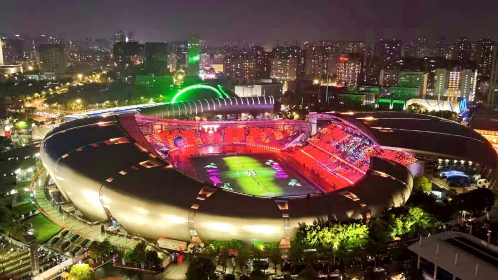
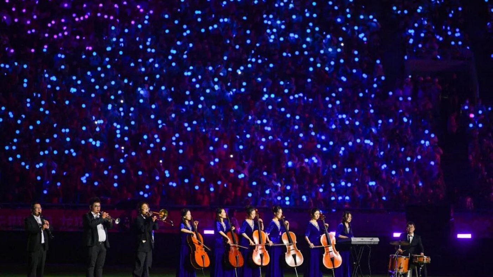
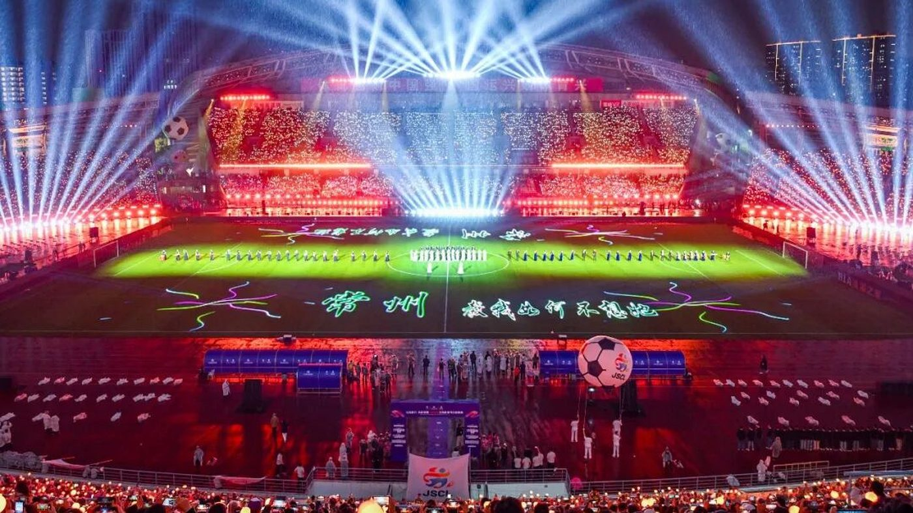
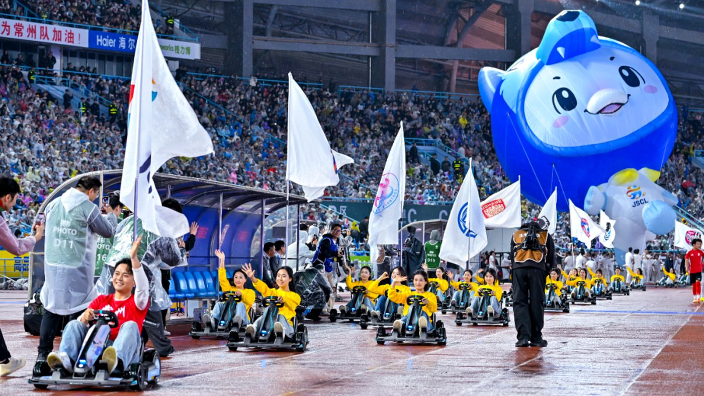

04 · 新能源
赛前的常州
比赛开始前的二十分钟，球场属于这座城市的产业： 机器人、卡丁车、无人驾驶车和无人机。
新能源之都
一座把产业摆上球场的城市
常州是江苏的“新能源之都”。理想汽车、比亚迪、宁德时代、九号、天合光能 都在这里有工厂或总部，“发、储、送、用、网”五个环节串成了一条完整的产业链。
2024 年，全市新能源产业规模突破 8500 亿元，新能源整车产量近 80 万辆， 约占江苏全省的六成；新能源产业集聚度排在全国第三。
对一座地级市来说，这些数字很硬。问题是怎么让普通人看见—— 球场正好是一个现成的窗口：四万人坐在看台上，直播信号还在往外送。

开幕式 · 4 月 11 日
十三块天幕，灯阵与机器人
2026 赛季的揭幕战放在常州。开幕式上，13 城歌曲联唱、13 块巨型天幕点亮， 无人机在夜空中排成灯阵。
场地中间，290 台常州本地生产的机器人和机器狗在雨里一起跳舞； 40 辆新能源卡丁车绕场巡游；周深唱了本赛季的主题曲《热烈盛开》。 有网友说，这场开幕式的规格像世界杯。
这些节目不是外包的文艺演出，而是本地企业的产品展示。机器人来自常州本地的工厂， 卡丁车用的是本地的电池和电机，连天上的无人机编队，也是本地企业在做。
对球迷来说，这可能只是赛前的一段热闹；但对这座城市来说， 这是一次把产业搬到家门口的尝试。



摄影 常州市摄影家协会
把产业开进球场
《智启绿茵 · 常创巡游》
8 个主场、8 个周末，常州的暖场环节一次比一次“硬核”。 10 月 11 日四分之一决赛，暖场巡游登场：九号无人驾驶车、理想汽车等智能装备组成编队， 沿跑道行进。
九号公司还借这场比赛，第一次在国内大型场合公开展示“鼹鼠自平衡 2.0”和“同频双闪”技术， 直播信号把它送向了全球。
这种做法有它的逻辑：一台车在展厅里没人看，但在四万人面前开过去， 第二天就会有人在网上问“那是什么车”。
球场之外